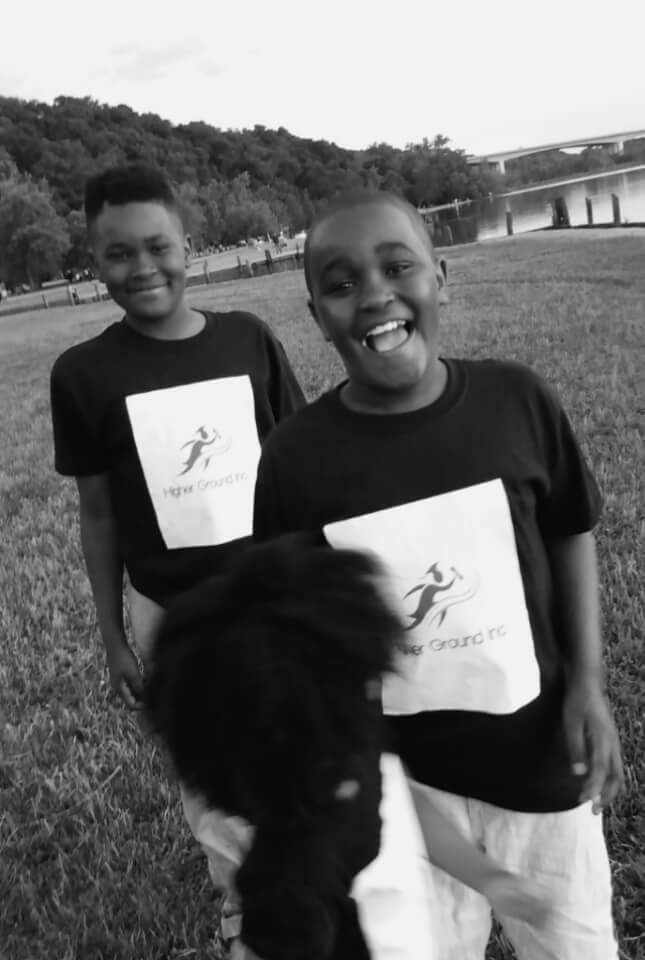
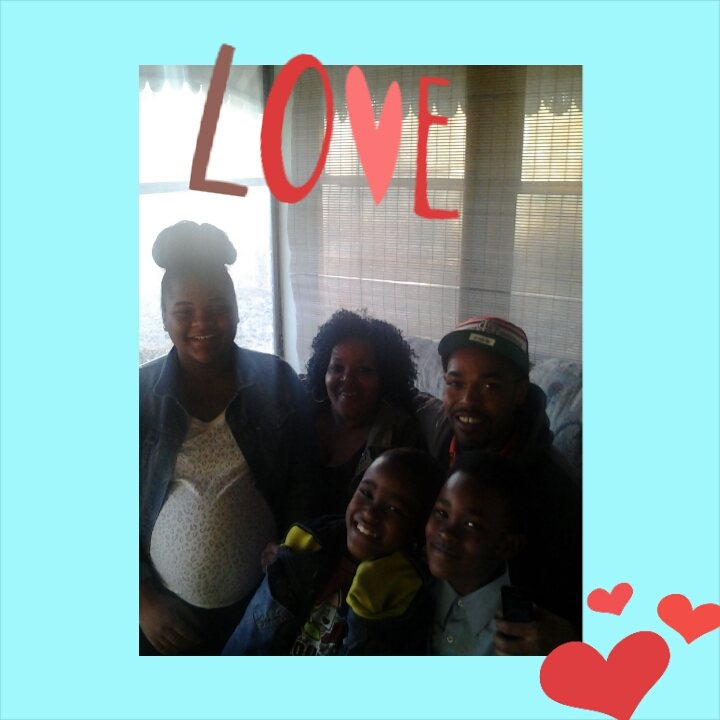
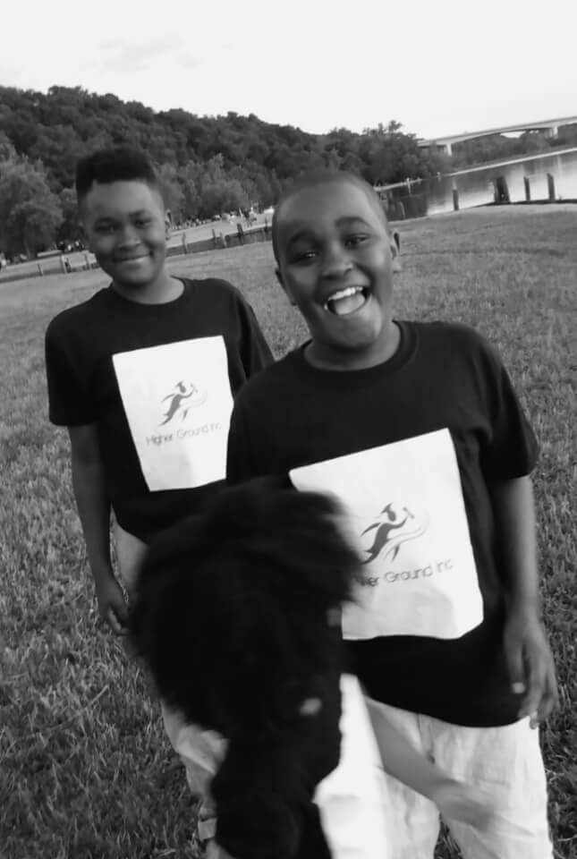
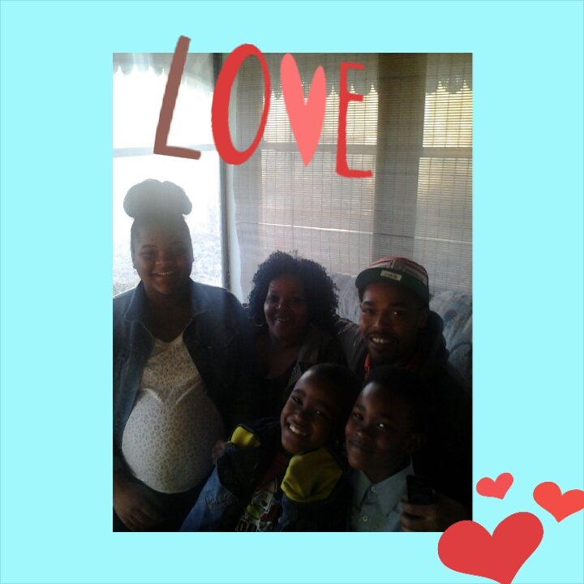
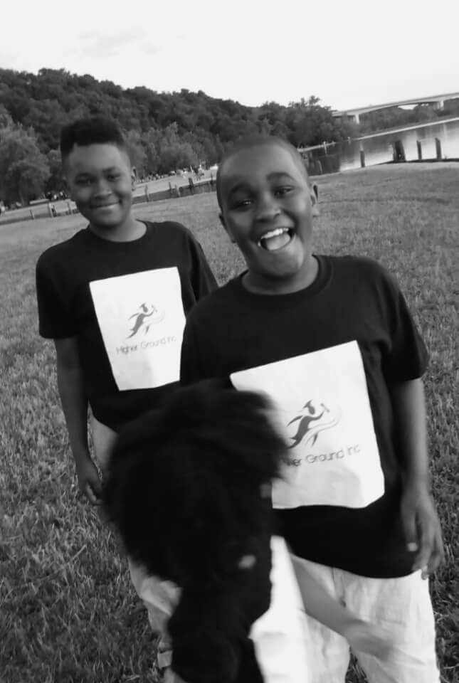
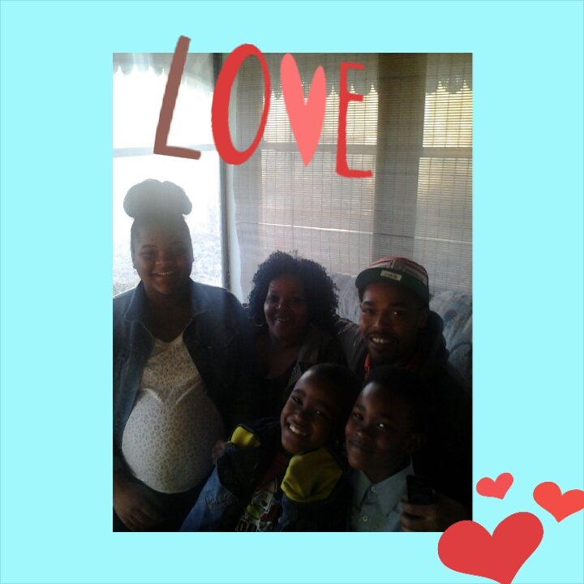

.jpg) 



Hello, I must begin by saying that it's an great opportunity to be putting this website together. This is something I thought I never would be able to do. I've truly learning in my life that nothing truly impossible if you truly believe. I Praise The Lord for He is truly doing wonderful thing in my life. I would like to take this time to acknowledge my mentor who has been a strong advocate at instructed me thru this process. This young man has the patience of Job. Never would have made it if Mr. Silly Tilley aka Matt had enroll in this program. Thank You so much word can express the gratitude.
I am a 58year old young woman with a life full of interesting journeys, through it all I have come to this place and time in my life to be grateful for each and everyday. Thanking my Lord for bringing me through it all. I am the mother of a 37 yr old son, grandmother of 3 grandchildren and 1 great grandson. Look at God pretty good for a young woman three generations! I am truly grateful, for my God-daughter and all the rest of my children and grands, there are many. I have always been a people person, had no idea it would bring me to the stage in my life as a servant of God people. I gladly took the job.


I was raised in Wellston, Mo. by both of my parents in the same house. Prentiss & Gladys Scott even in my days it was rare. but there two parent families in the hood. We were the average working class family. I am the 2nd oldest of the 6 of us. The oldest girl a the mother hen, daddy's girl which cost me to get in trouble with mom a lot of time. I had a very decent childhood penty of material stuff. My parent were very hardworking people, I feel that maybe the reason they are gone on. Spending a lot of time working and not taking better care of themselves. Bless them both, I was raise with a lot of morals, matters and values> Education was big in our household. I graduated from High School in 1977, didn't attended college due to my own stubborn ways. Leave home after school got married had a baby had to get a job, went against everything I was taught, but never forgot what I had learned. A lot of us sometimes when we are young really think we know it all LOL!!! I had a very hard way for awhile, thanks to my parents and grandparents for raisingand teaching me the right way cost me to stop in my maddest and turn myself back around.